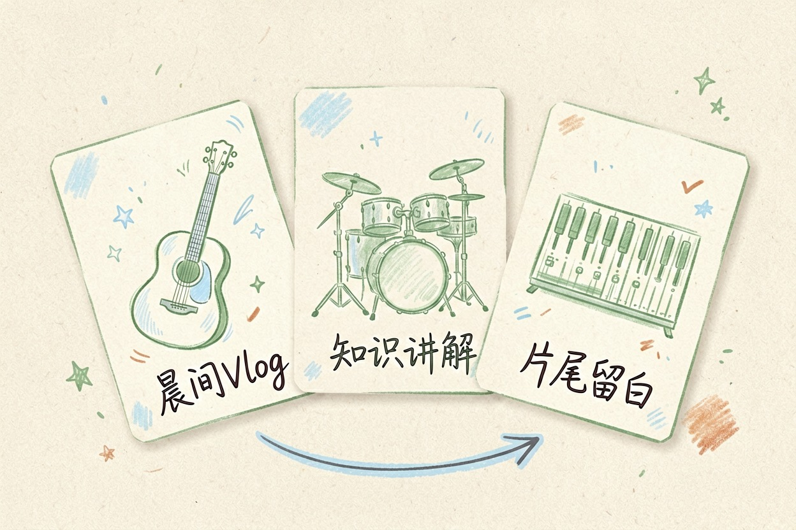
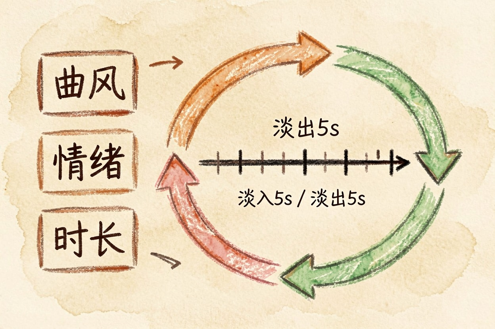
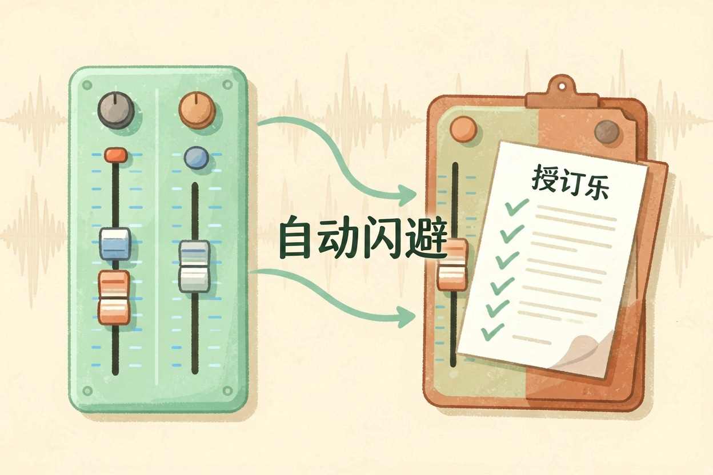
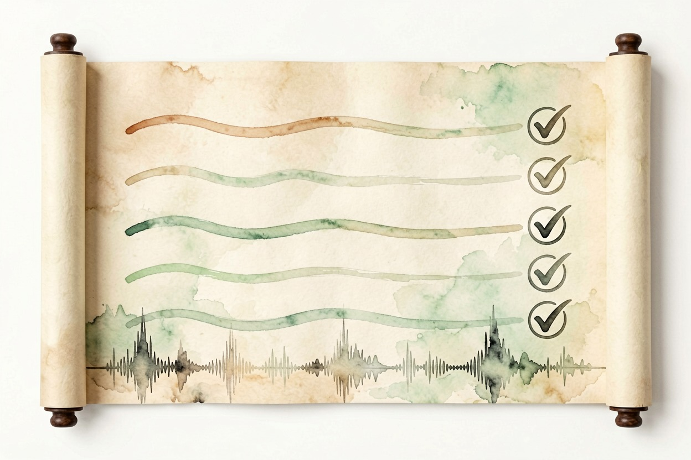

用 AI 做背景音乐？给视频配乐的挑选思路 — Learntide
给视频配乐不必懂编曲。定好曲风和情绪，让工具生成一段合适长度的背景乐。
ai做背景音乐能省多少事

ai做背景音乐，省的是找曲和剪曲的时间。你给曲风、情绪、时长，工具出一段能用的 loop。匹配度也许不如定制，但胜在快。
先想清楚用途。片头要抓耳，转场要轻，结尾要收得住。同一段视频，三处配乐可能三种写法，别一段用到底。情绪先列清单，生成不跑偏。
预算也要算。商用定制曲贵，AI 生成便宜甚至免费。小项目先用 AI 跑通，跑出感觉再决定要不要升级。先验证内容，再投钱。
情绪匹配最难。欢快曲配沉重话题，观众出戏。先写情绪词，再让工具对。词越准，生成越贴。
选曲风先于生成

曲风定调。知识类用轻电子，生活类用吉他，励志类用鼓点强的。选错曲风，内容再好也出戏。
拿三个曲风各生成一小段，戴耳机对比。别只看名字，实际听情绪对不对。多数工具支持「相似生成」，定下方向再微调。先小段试听，再生成整段，省额度。
情绪标签要细。同一轻电子，晨间和深夜两种味。标签写细，生成才不泛。先建自己的标签本。
曲风也能混。主歌用钢琴，副歌加鼓，情绪有起伏。别乱混，先定一个主基调。混得巧，片子的记忆点就出来。
平台也有偏好。某站偏燃，某站偏静。先看清去哪发，再定曲风。投错池子，好曲也沉。
用提示词控制情绪与长度

提示词写具体。别说「欢快」，说「轻快吉他，适合晨间 vlog」。情绪、速度、乐器都点明，产出更贴。
请生成 30 秒背景音乐：
1 曲风：轻电子，节拍 100
2 情绪：专注但不紧张
3 结构：前 5 秒淡入，后 5 秒淡出
4 不带人声，循环无缝长度要卡画面。配乐比画面长，结尾硬切尴尬；比画面短，中间留白冷场。生成前量好片段秒数，再写进提示词。多生成几秒余量，剪辑留得长。
循环点要干净。loop 首尾音量接得上，听不出断点。生成时勾无缝循环，省去手工拼。拼错了，耳机会咔哒。
音量平衡与淡入淡出
配乐永远压在人声下。人声段压到负二十分贝上下，气口再浮起。观众听清话，才留得住。
淡入淡出各做两秒。开头不炸耳，结尾不戛止。转场处配乐起承，画面切换更顺。音量怎么统一，可以看同簇的 ai视频降噪 思路。人声一进，配乐一退，节奏就活。
配乐也做响度对齐。别让它抬升整片均值，否则人声被迫压低。先定人声电平，再放配乐。整体平衡，听感才专业。
不同平台音量标准不一。发前用手机外放校一遍。电脑听着够，手机可能闷。以播放端为准。
版权与导出避坑
商用先看授权。标注「可商用」的才敢接单，免费试听未必能变现。下载前读清楚许可范围，别事后被追责。
导出选常见格式，码率够用。文件名带曲风和时长，后面归档好找。免费额度与授权范围，以官网当前说明为准。
留生成记录。授权纠纷时，记录能证明来源。截图存一份，省以后扯皮。
最后提醒：别把生成的第一版直接铺满全片，先小段试听。把曲风定准，ai做背景音乐才真合适。

本文信息核对于 2026-08-08。AI 产品的价格、免费额度与功能变动频繁，实际以各工具官网当前说明为准。